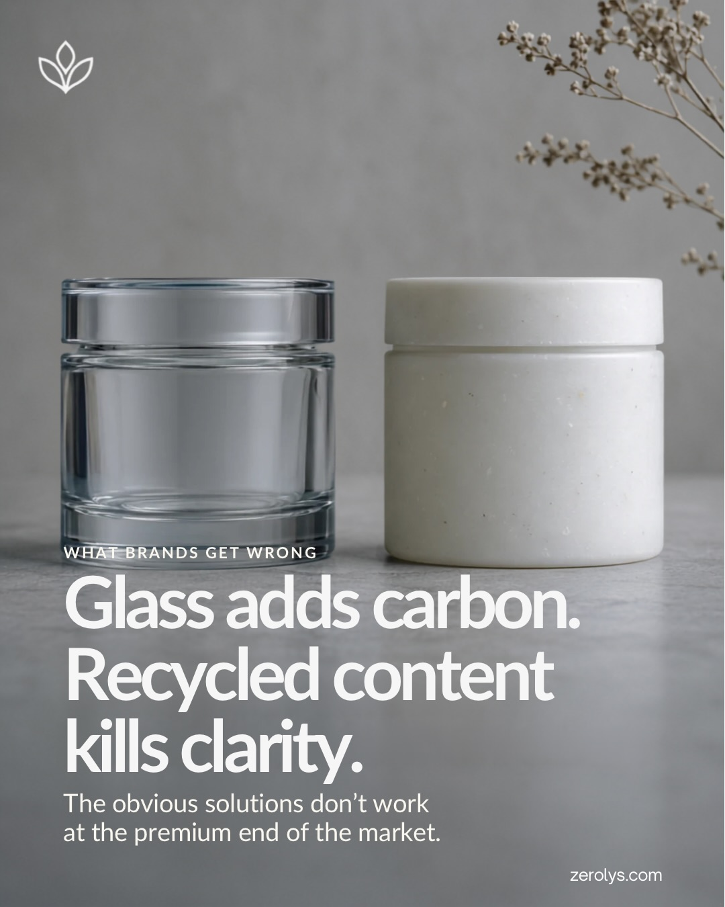
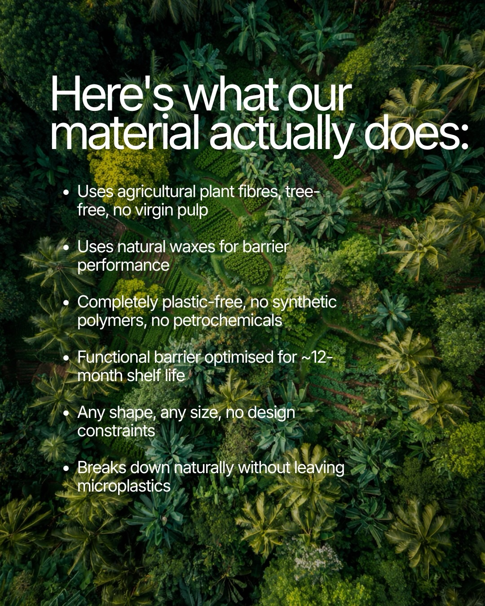
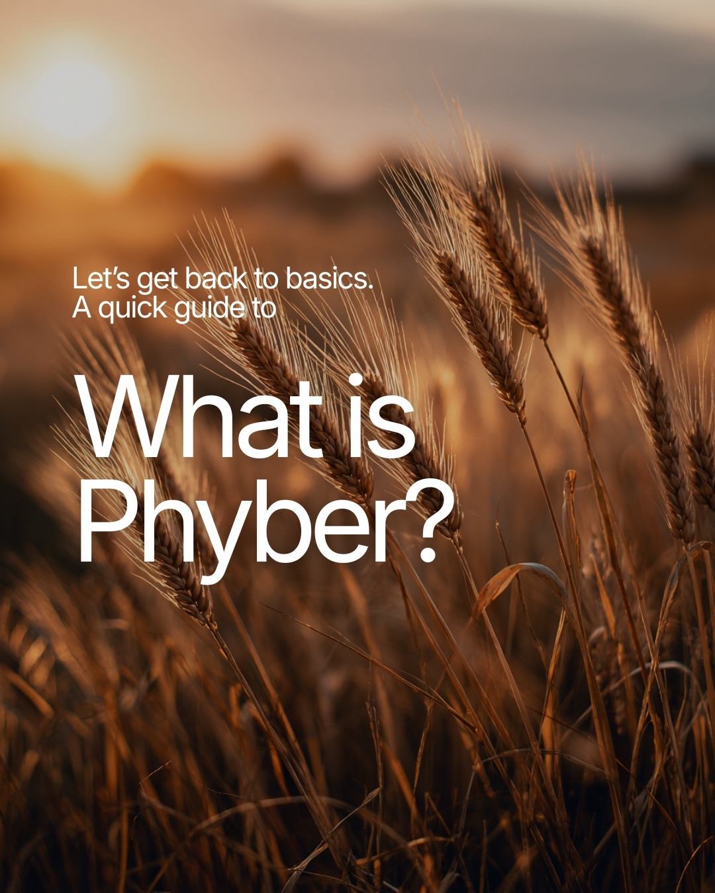
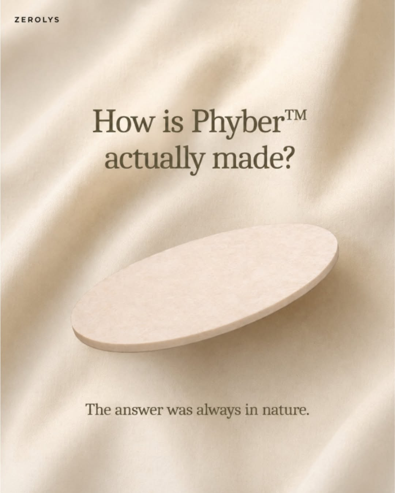
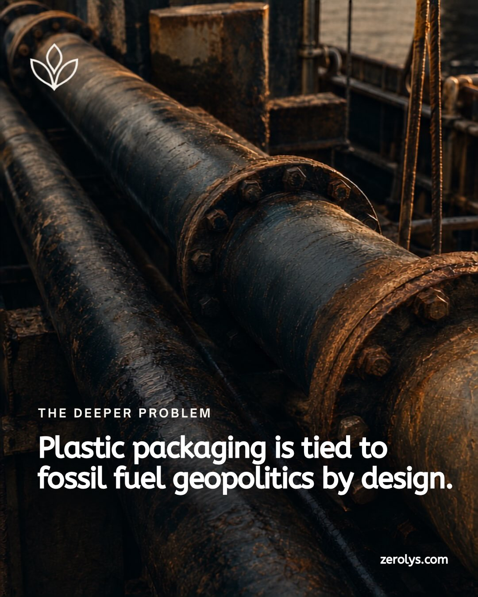
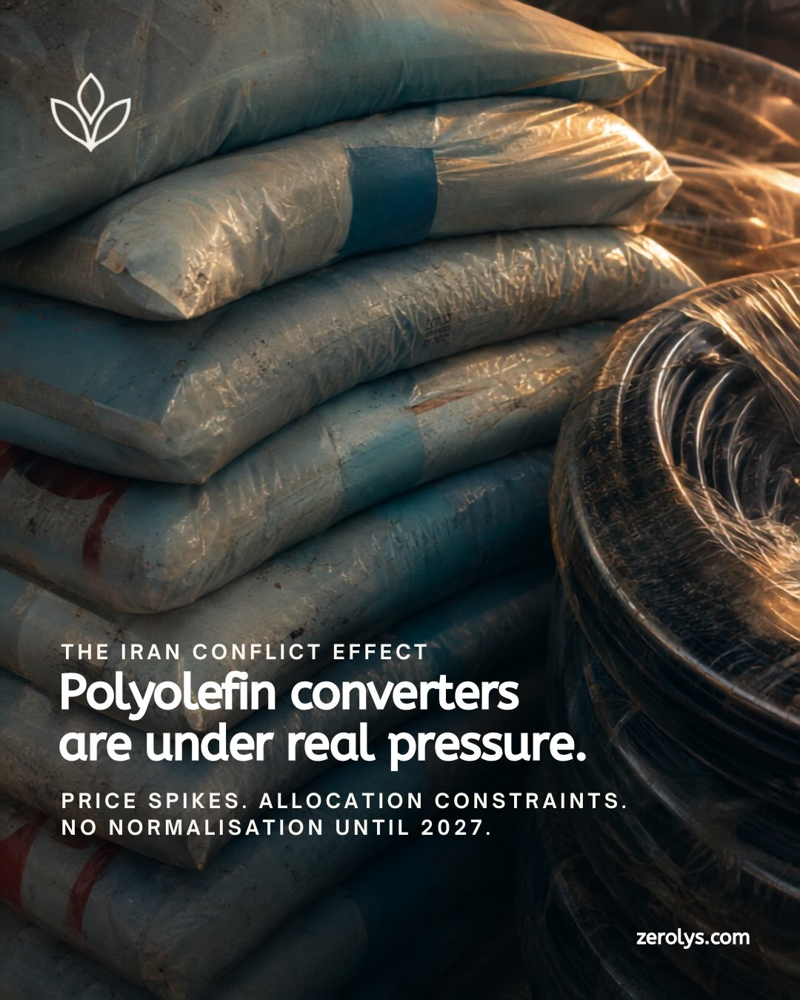
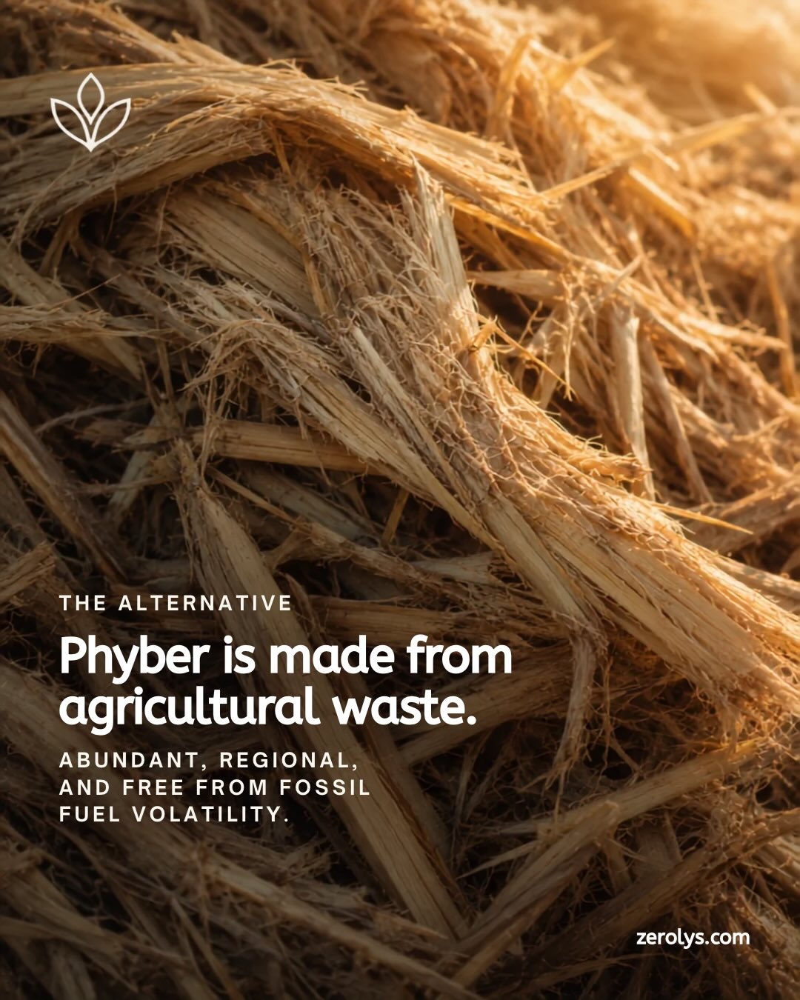
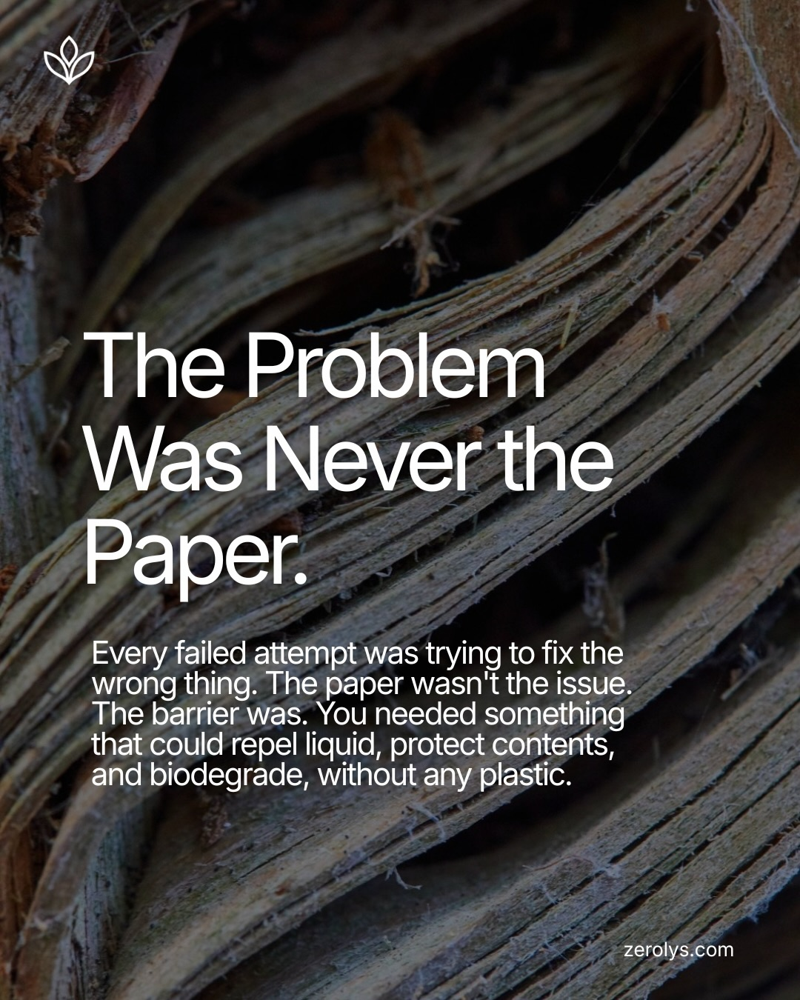
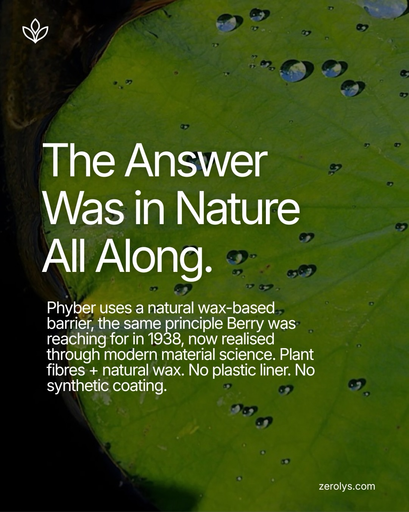

Work / 06 / Sustainable Packaging
Zerolys
ClientZerolys
CategorySustainable Packaging
ScopeDesign
Year2025
The brief
What was
in the way
The sustainability claim was real, third-party verified, and buried. It sat below an ingredient list, in a typographic hierarchy that gave equal weight to everything, which is the same as giving weight to nothing.
What we did
The work
itself
We rebuilt the pack hierarchy so the claim lands before the ingredient list, with an iconography set that carries the science without a paragraph of explanation. The system was drawn to scale across the full range, including the smallest format, where most pack systems quietly fall apart.



















1 system
Full range
SKU-min
Tested at smallest format